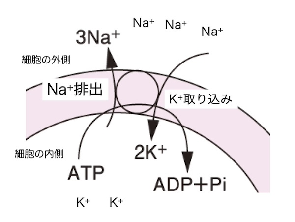
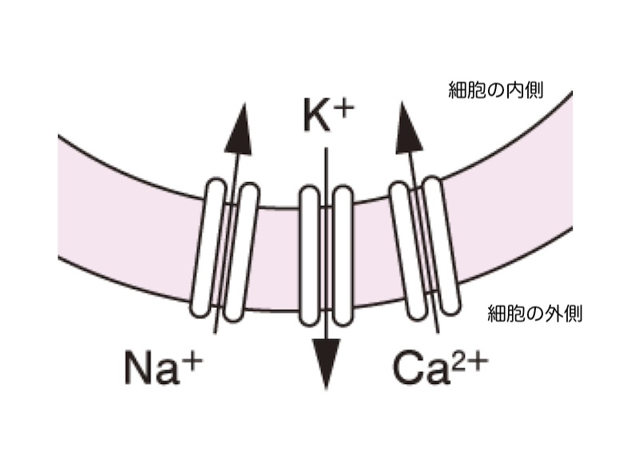
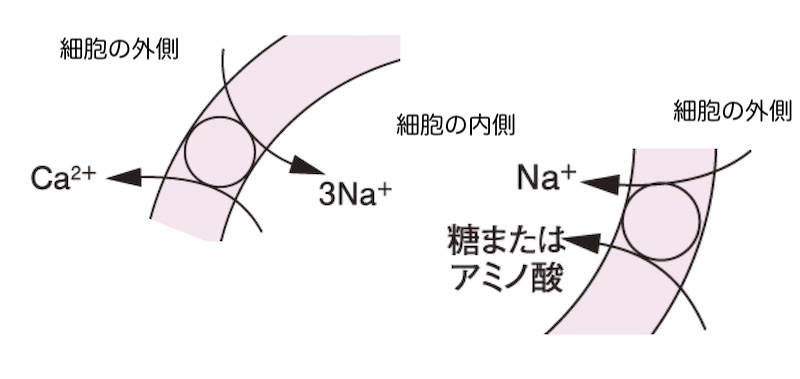

第１章 はじめに
私たちは普段、「生きている」と聞くと、歩く、話す、考える、運動する、といった活動を思い浮かべます。 しかし、生物学的に見ると、生きていることの本質は少し違います。
私たちの体を構成する約37兆個の細胞は、休むことなくエネルギー（ATP）を消費しています。 眠っている間も、椅子に座っている間も、細胞は絶えず働き続けています。
ここで、ATPという言葉を、解説します。
私たちは、食事から、栄養（炭水化物、タンパク質、脂質など）を摂取して、エネルギーを獲得しています。
炭水化物を例に摂ると、グルコースにまで分解された後、細胞に取り込まれ、「解糖系」「TCA回路」「電子伝達系」「ATP合成酵素」を通して、栄養素が持っているエネルギーを「ATP」という物質に変換します。
ATPとは、アデノシン三リン酸のことで、高エネルギー化合物とも言われ、ATPが、ADPとリン酸に分解されるときに、生命活動に利用できるエネルギーが放出されます。私たちはそのエネルギーをいろいろな仕事のための動力源としているのです。
つまり、「ATPとは細胞のエネルギー通貨」ともいえます。
「生きていること」の本質は、体全体が「秩序」を維持し続けていること、になります。
その「活動」の一つが、「細胞の内側と外の環境を維持（調節）すること」です。
第２章 エネルギー ATP の使い道
(1) Na+/K+-ATPase（ナトリウム・カリウムポンプ）の役割
一般的な細胞では、合成された「ATP」の多くが、「ナトリウム・カリウムポンプ」によって使われています。
神経細胞は、「ATP」の50-70%をこのポンプが使っています。
一般的な細胞では、20-40%と言われています。
また、細胞の内部にはカリウム（K+）が多く、外側にはナトリウム（Na+）が多く存在しています。
この偏りは自然にできるものではありません。
細胞は「ATP」というエネルギーを使いながら、常にナトリウムを外へ排出し、カリウムを内部へ取り込んでいます。
この働きを行う酵素が「Na+/K+-ATPase（ナトリウム・カリウムポンプ）」です。
さらに、このポンプは、ATPを１個使うごとに、Na+を３個細胞の外に、K+を２個細胞の内側に運びます。
これは、「イオンの種類の偏り」と同時に、「イオンの濃度の差」を生じさせています。

その濃度差は、1) 細胞の容積を維持するため、2) 膜電位を維持するため、3) Ca2+濃度の調節のため、4)栄養素と取り込むため、に利用されます。（以下、それぞれの項目について、解説します。）
(2) 細胞の容積を維持するため
細胞の内部には、「タンパク質」「アミノ酸」「核酸」など、いろいろな物質が「ぎゅうぎゅう詰め」の状態です。
この状態だと、浸透圧によって「水」が細胞内へ流入しようとします。
ナトリウム・カリウムポンプがNa+を外へ排出することで、「細胞内の浸透圧の上昇を防ぐ」「水の過剰流入を防ぐ」ことができます。
もし、このポンプが停止すると、ーーー「第４章」で解説します。
(3) 膜電位を維持するため
神経細胞や筋細胞、心筋細胞では、ナトリウム・カリウムポンプの作用により、Na+が３個排出され、K+を２個取り込み、「細胞内：K+が多い」「細胞外：Na+が多い」状態になります (図1）。
詳細な機構の説明は省略しますが、このポンプの作用により、「細胞の内側がマイナスの”電池”のような状態」が、これらの細胞での準備状態です。
◼️ 神経細胞では、電気的な刺激がくると、細胞膜にある「ナトリウムチャネル」が開き、ナトリウムが一気に細胞内へ流入し、内側がプラスになります（脱分極）。
すぐに「カリウムチャネル」が開いて、カリウムが外へ流出して、内部を再びマイナスに戻します（再分極）。
この「脱分極と再分極」という「電気の波」が、神経細胞の一端から末端へと到達すると、末端で「神経伝達物質」が放出され、次の神経細胞へと情報が伝わります。

◼️ 「骨格筋」では、神経から届いた「電気の波」により、筋肉細胞の膜でナトリウムの流入が起こり、神経の情報が細部に伝わり、「カルシウム」が細部内に放出され、これを合図として、ATPのエネルギーを使って、アクチンとミオシンが「滑り込み」機構により「筋収縮」が起こります。
刺激が終わると、カリウムの流出で、膜電位が元に戻り、カルシウムも回収されて、筋は緩みます。
◼️ 心筋でも、基本は骨格筋と同じですが、「自動でリズムを刻み続ける」点が特徴です。
詳細は省略しますが、「洞房結節」という「ペースメーカー細胞」が、ナトリウム、カリウム、カルシウムの出入りを調節して、自動的に周期的な脱分極を起こします。
この情報が、心房から心室へと広がり、カルシウムの流入を合図に心筋が収縮して、血液を送り出します。
| 場所 | 主なイオンの動き | 役割 |
|---|---|---|
| 神経細胞 | Na+流入 → K+流出 | 情報を電気信号で送る |
| 骨格筋 | Na+流入 → Ca2+放出 → K+流出 | 意識して動かす筋肉を縮める |
| 心筋 | Na+とCa2+流入 → K+流出 | 自動リズムで心拍を生む |
(4) Ca2+濃度の調節のため
細胞内のCa2+は極めて低い濃度に保たれています。
Ca2+は、Na+の濃度勾配を駆動力とした「Na+/Ca2+交換体」を通して、常に細胞外に排出されています。
したがって、ナトリウム・カリウムポンプが停止すると、「Na+が細胞内に蓄積」「Ca2+の排出が低下」「Ca2+過負荷」が起こります。その結果、細胞障害や細胞死につながります。

(4) 栄養素を取り込むため
多くの栄養素は、Na+との「共輸送」によって細胞内へ取り込まれます。 例えば、グルコース、アミノ酸、胆汁酸などです。
細胞の外側には、Na+が多く存在し、細胞内部は少ない状態です。このNa+の濃度勾配が、物質を輸送するための駆動力となります。
グルコースなどの栄養素は、この駆動力の助けを借りて、細胞内部に取り込まれます。
一緒に取り込まれたNa+はまた、ナトリウム・カリウムポンプがATPのエネルギーを使って排出します。
小腸や腎臓では、「Na+濃度勾配」があるからこそ、「栄養吸収」「再吸収」などが可能となります。
第３章 細胞は電池のような状態を保っている
このポンプが働き続けることで、細胞は「電池のように充電された状態」を維持しています。 その状態の神経は情報を伝え、筋肉は収縮し、心臓は拍動することができます。
つまり、私たちは「動くため」や「考えるため」だけでなく、 まず「生きた状態を維持するため」に大量のエネルギーを使っているのです。 細胞は、ATPを使ってNa+とK+の濃度さを維持し、いつでも活動できる準備状態を保っているのです。
生命とは「動いていること」ではなく、細胞が秩序を維持し続けている状態とも言えるでしょう。
第４章 ポンプが止まるとどうなるか
酸素不足や重度のエネルギー不足が起こると、ATPの産生が低下します。 するとNa+/K+ポンプが十分に働けなくなります。
その結果を、第２章の見出しごとにまとめます。
(1) 細胞容積について
ナトリウムが細胞内に蓄積し、水が流れ込み、細胞は膨らみ始めます。 この変化は細胞障害の最も初期の段階の一つです。
続いて、細胞障害が進行し、最終的には細胞死に至ります。
(2) 膜電位について
膜電位が形成されていないため、神経細胞では、情報伝達が行われず、筋細胞や心筋細胞では、正常な活動が実行できないことになります。
(3) Ca2+濃度の調節について
本来低い濃度であるCa2+濃度が高まると、Ca2+の過負荷状態になり、細胞障害や細胞死につながります。
(4) 栄養素の取り込みについて
ポンプが停止すると、細胞内への栄養素の吸収効率が著しく低下します。
第５章 私たちが心がけること
(1) 十分な睡眠
睡眠不足は、神経活動の負荷を高め、エネルギー代謝のバランスを壊しやすくします。
(2) 適度な運動
ミトコンドリア機能や代謝効率の維持に役立ちます。
(3) 栄養を十分に摂取する
ATP生産に必要な栄養素が不足すると、細胞の維持コストを賄いにくくなります。
(4) 脱水に注意
イオンバランスの乱れは、細胞機能に直接影響します。
このポンプを強化するサプリとか、特効薬はありません。日々の生活習慣を健全に保つことが最も大切です。
第６章 まとめ
細胞が生きているとは、単に存在していることではありません。
「Na+/K+-ATPase」は、単にNa+とK+を運ぶポンプではなく、細胞内外のイオン環境を維持し、膜電位、細胞容積、栄養輸送、Ca2+調節を支える「生命維持装置」なのです。
虚血や低酸素状態でATP産生が低下すると、まずNa+/K+-ATPaseの働きが落ち、その結果として細胞浮腫や細胞障害が始まるのです。
「私たちは動くためよりも前に、細胞が活動できる状態を維持するためにエネルギー（ATP)を使っている」のです。
細胞が活動できる状態、すなわち、体（細胞）の秩序をを維持するために（＝生命を維持するために）、第５章で示した「毎日の活動」が重要なのです。特に、「栄養の取り込み」が必須なのです。
「生命」とは、エネルギーを使いながら「秩序を維持し続ける」仕組みです。
生活習慣10選も参考になります。
参考文献
- Nelson DL, Cox MM. Lehninger Principles of Biochemistry.
- 鈴木紘一ら ホートン生化学 第５版.
- Guyton AC, Hall JE. Textbook of Medical Physiology.